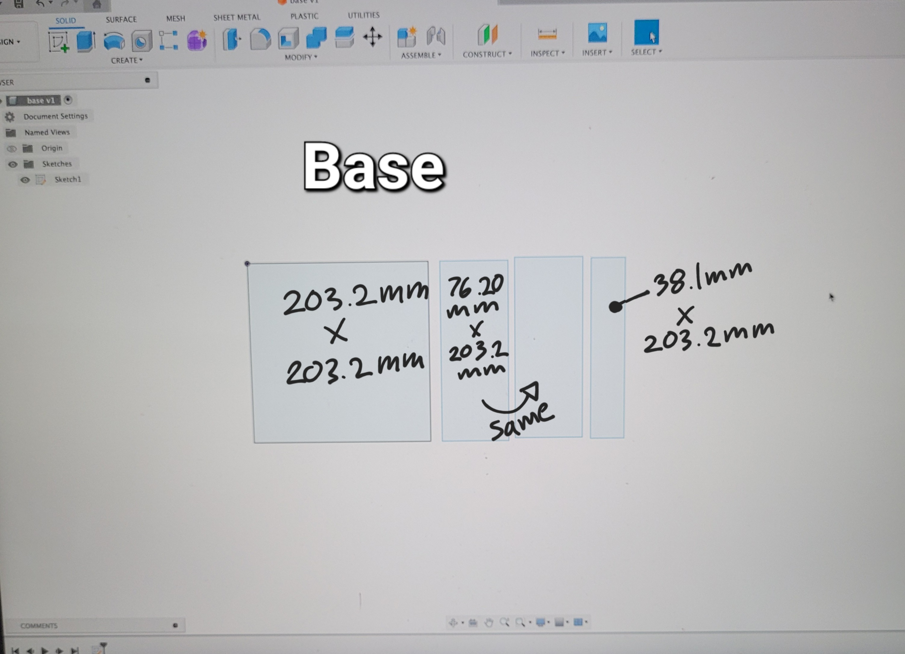

<br>
## Final project:
For my final project, I would like to create a robot that will be helpful to the people in my life. When I started to think about people in my life who could use some extra help I thought about my grandma. My grandma has been staying at my house for a while now and over time I noticed that she would always call me to her to pick up something she dropped up for her due to her. I get worried when I'm not home whether she'll be alright on her own. I don't want her to fall or hurt herself picking something up. My robot will be able to pick up things that have been dropped and will be able to bring them to a height that doesn't require you to bend downwards.
Here is a design I have for it so far.
<center><img src="side view final.png" width="600" ></center>
______________________________________________________________________________________
## Conveyor Belt
### sketch:
<center><img src="final conveyor sketch.jpg" width= "500" ></center>
### Fusion360 drawing:
I created the pieces of the conveyor belt on fusion360.
<img src="Sides of conveyor belt.jpg" width="500" > <img align= "right" img src="tube supports.jpg" width="600" >
Then I used the laser cutter to cut the peices out of wood. After I cut the pieces out I hand-sawed multiple tubes and wooden rods in order to make the axels of the tubes and wheels.
I then started to assemble the conveyor belt using the wood glue.
<img align= "left" img src="conveyor rod pieces.jpg" width="500" > <center><img src="conveyor rod 2.jpg" width="500" ></center>
### Connect to motor A:
<img src="conveyor support.jpg" width="600" > <img align= "right" img src="tube supports.jpg" width="600" >
### Here is the code for the motors:
I programmed the motor to turn on and off after a set time. Motor A and B share the same code.
<p>
Here is a <a href="final motor code.html">LINK</a> to the motor code.
</p>
### Adding the belt:
After the base of the conveyor belt was put together I was able to wrap a rubber sheet around the tubes. With the bolts and nuts on the sides of the conveyor, I was able to tighten the rubber sheet.
Before glueing the rubber sheet around the conveyor with rubber glue YOU HAVE TO MAKE SURE THE BOLTS AND NUTS ARE AT THEIR CLOSEST DISTANCE as shown in the image below.
<center><img src="bolt btr.jpg" width="600" ></center>
Once the rubber sheet is dried we can now space the nuts and bolts to their greatest distance to stretch and tighten the rubber sheet.
### Here is how is the finished conveyor belt:
<center><video width="470" controls>
<source src="belt.mp4" type="video/mp4">
</video></center>
______________________________________________________________________________________
## Wheels
### Fusion360 drawing:
I made 4 wheels measuring 76.20 mm in diameter with a small hole of 9.80 mm in diameter in its center in fusion360 and then used the laser cutter to cut them out.
<center><img src="tube supports.jpg" width="600" ></center>
### Assembly:
I used the wooden rod as the axel of my wheels and used wood glue to glue them together. Now that that's dried I can move on to working on the base of the machine and motors.
<center><img src="wheel assembly.jpg" width="500" ></center>
### Connect to motor B and Base:
I used wood glue to glue the wheels to the very end of the axels. Then I stuck the rest of the other side of the axel through the support tubes we made. Once through I used heat shrink to connect the motor and the ends of the axels. For extra strength I put zipties around it as well. To connect it to the base I glued to tube supports on the bottom of the base. I went back and secured the motor with cardboard.
<center><video width="620" controls>
<source src="20230729_172054.mp4" type="video/mp4">
</video></center>
______________________________________________________________________________________
## Base
### Base Sketch:
<center><img src="final base sketch.jpg" width="600" ></center>
This is simply an open lidded box. I used just 4 pieces of wood in total.
### Here is the fusion360 drawing:
<center></center>
### Here are the pieces assembled.
<center><img src="base assembled.jpg" width="600" ></center>
______________________________________________________________________________________
## Combining the 3 groups, Conveyor, Wheels, and Base:
First I began by securing the wheels to the bottom of the base. I glued the support tubes down with wood glue and even secured parts with cardboard for extra support as shown in the image below:
<center><video width="620" controls>
<source src="20230729_172054.mp4" type="video/mp4">
</video></center>
Once that was dried and secure I was able to glue the conveyor belt to the base as well. I added squares of cardboard on the sides of the base so that the space between the base and the conveyor belt was more snug.
<center><img src="" width="600" ></center>